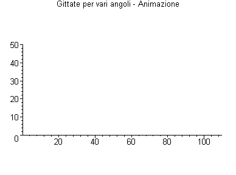

Moto Parabolico - Massima Gittata
G.Piluso e R.Virili - 2003
>
restart:
with(plots):
Grafica delle gittate per vari angoli
> N:=5: #Numero di gittate
> yo := 0.0:
> xo := 0.0:
> g := 9.81:
> V:=30:
> Vx:=V*cos(theta):
> Vy:=V*sin(theta):
> x := Vx*t+xo:
> y := -g*t^2+Vy*t+yo:
> theta:=array(1..N):
> tr:=array(1..N):
> MioCol:=array(1..N):
> angolo:=0:
>
for i from 1 by 1 to N do
angolo:=angolo+15:
theta[i]:=angolo*Pi/180:
MioCol[i]:=
COLOR(RGB,rand()/10^12,
rand()/10^12,rand()*i/10^12):
end do:
>
for i from 1 by 1 to N do
tr[i]:=animatecurve(
[xo+V*cos(theta[i])*t,
yo+V*sin(theta[i])*t-4.900000000*t^2,
t=0..110/(V*cos(theta[i]))],
view=[0..110,0..50],
frames=50,
scaling=constrained,
color=MioCol[i],
thickness=2,
title="Gittate per vari angoli - Animazione"):
end do:
> display(seq(tr[i], i=1..N));
